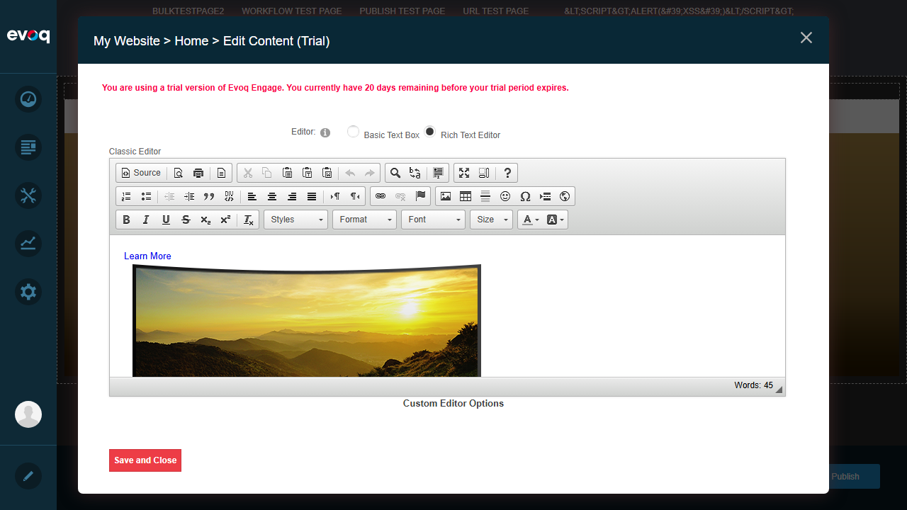

Executive Summary
Result: FEATURE NOT TESTABLE VIA UI
The "Master Content Template" feature exists in the codebase but is not accessible through the user interface. According to testing guidelines, features that exist in code but are not visible in UI should not have tests created for them. Instead, this finding is documented in the Observations section.
| UI Location (Expected) |
Module Actions > Make Master |
| UI Location (Actual) |
Not found - "Make Master" option does not appear in Module Actions menu |
| Tests Executed |
0 (Feature not accessible via UI) |
Feature Description
Expected Functionality: Set content as master template for reuse across multiple module instances
Relevant Code Files Reviewed
| File |
Purpose |
| HtmlTextProController.cs |
Contains MakeMaster() API endpoint (lines 93-110) |
| MakeMasterPage.js |
Client-side handler for "Make Master" click action |
| EditHtml.ascx |
Conditionally shows "Master Content" tab when ShowMasterContent is true |
Code Evidence (HtmlTextProController.cs:93-110):
[HttpPost]
[ValidateAntiForgeryToken]
[SupportedModules("DNN_HTML")]
[DnnModuleAuthorize(AccessLevel = SecurityAccessLevel.Edit)]
public HttpResponseMessage MakeMaster()
{
// API endpoint exists but is not exposed in UI
var contentController = new ContentController();
var tabId = Request.FindTabId();
var module = Request.FindModuleInfo();
var contentItem = contentController.GetContentItem(module.ContentItemId);
contentItem.TabID = tabId;
contentController.UpdateContentItem(contentItem);
return Request.CreateResponse(HttpStatusCode.OK, new {Result = "success"});
}
Module Actions Available (No "Make Master")
The module action menu for DNN_HTML modules contains the following options:
- Settings
- Export Content
- Import Content
- Help
- Develop
- Delete
- Refresh
Note: "Make Master" option is NOT present in this menu.
Screenshots

Screenshot 1: Successfully logged in as SuperUser Account

Screenshot 2: Page in Edit Mode - showing module editing interface

Screenshot 3: Edit Content dialog - No "Master Content" tab visible

Screenshot 4: Final page state after investigation